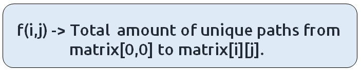

In this article, we will solve the most asked coding interview problem: Grid Unique Paths 2.
Problem Link: Maze Obstacles
Problem Description:
We are given an “N*M” Maze. The maze contains some obstacles. A cell is ‘blockage’ in the maze if its value is -1. 0 represents non-blockage. There is no path possible through a blocked cell.
We need to count the total number of unique paths from the top-left corner of the maze to the bottom-right corner. At every cell, we can move either down or towards the right.
Examples
Example:

Disclaimer: Don’t jump directly to the solution, try it out yourself first.
Memorization Approach
Algorithm / Intuition
Let us look at this example:
A path through the cell[1][1] is not possible as it is blocked, therefore we need to count every other legit path which doesn’t include the cell[1][1].
Steps to form the recursive solution:
We will first form the recursive solution by the three points mentioned in Dynamic Programming Introduction.
Step 1: Express the problem in terms of indexes.
We are given two variables N and M, representing the dimensions of the maze.
We can define the function with two parameters i and j, where i and j represent the row and column of the maze.

We will form f(i,j) in such a way that it will handle the obstacles.
We will be doing a top-down recursion, i.e we will move from the cell[M-1][N-1] and try to find our way to the cell[0][0]. Therefore at every index, we will try to move up and towards the left.
Base Case:
There will be three base cases:
- When i>0 and j>0 and mat[i][j] = -1, it means that the current cell is an obstacle, so we can’t find a path from here. Therefore, we return 0.
- When i=0 and j=0, that is we have reached the destination so we can count the current path that is going on, hence we return 1.
- When i<0 and j<0, it means that we have crossed the boundary of the matrix and we couldn’t find a right path, hence we return 0.
The pseudocode till this step will be:
Step 2: Try out all possible choices at a given index.
As we are writing a top-down recursion, at every index we have two choices, one to go up(↑) and the other to go left(←). To go upwards, we will reduce i by 1, and move towards left we will reduce j by 1.
Step 3: Take the maximum of all choices
As we have to count all the possible unique paths, we will return the sum of the choices(up and left)
The final pseudocode after steps 1, 2, and 3:
Steps to memoize a recursive solution:
If we draw the recursion tree, we will see that there are overlapping subproblems. In order to convert a recursive solution the following steps will be taken:
- Create a dp array of size [n][m]
- Whenever we want to find the answer of a particular row and column (say f(i,j)), we first check whether the answer is already calculated using the dp array(i.e dp[i][j]!= -1 ). If yes, simply return the value from the dp array.
- If not, then we are finding the answer for the given values for the first time, we will use the recursive relation as usual but before returning from the function, we will set dp[i][j] to the solution we get.
Code
#include <bits/stdc++.h>
using namespace std;
// Helper function to count the number of paths from (i, j) to (0, 0)
int mazeObstaclesUtil(int i, int j, vector<vector<int>> &maze, vector<vector<int>> &dp) {
// Base cases
if (i > 0 && j > 0 && maze[i][j] == -1) return 0; // If there's an obstacle at (i, j), return 0
if (i == 0 && j == 0) return 1; // If we reach the destination (0, 0), return 1
if (i < 0 || j < 0) return 0; // If we go out of bounds, return 0
if (dp[i][j] != -1) return dp[i][j]; // If the result is already computed, return it
// Recursive calls to explore paths from (i, j) to (0, 0)
int up = mazeObstaclesUtil(i - 1, j, maze, dp);
int left = mazeObstaclesUtil(i, j - 1, maze, dp);
// Store the result in the DP table and return it
return dp[i][j] = up + left;
}
// Main function to count paths with obstacles in a maze
int mazeObstacles(int n, int m, vector<vector<int>> &maze) {
vector<vector<int>> dp(n, vector<int>(m, -1)); // DP table to memoize results
return mazeObstaclesUtil(n - 1, m - 1, maze, dp); // Start from the bottom-right corner
}
int main() {
vector<vector<int>> maze{
{0, 0, 0},
{0, -1, 0},
{0, 0, 0}
};
int n = maze.size();
int m = maze[0].size();
cout << "Number of paths with obstacles: " << mazeObstacles(n, m, maze) << endl;
return 0;
}
import java.util.*;
class TUF {
// Helper function to calculate the number of paths through the maze
static int mazeObstaclesUtil(int i, int j, int[][] maze, int[][] dp) {
// If there's an obstacle at this cell or out of bounds, return 0
if (i >= 0 && j >= 0 && maze[i][j] == -1)
return 0;
// If we've reached the start cell, there's one valid path
if (i == 0 && j == 0)
return 1;
// If we're out of bounds, return 0
if (i < 0 || j < 0)
return 0;
// If we've already calculated this cell, return the stored result
if (dp[i][j] != -1)
return dp[i][j];
// Calculate the number of paths by moving up and left
int up = mazeObstaclesUtil(i - 1, j, maze, dp);
int left = mazeObstaclesUtil(i, j - 1, maze, dp);
// Store the result and return it
return dp[i][j] = up + left;
}
// Main function to calculate the number of paths through the maze
static int mazeObstacles(int n, int m, int[][] maze) {
int dp[][] = new int[n][m];
// Initialize the dp array with -1
for (int row[] : dp)
Arrays.fill(row, -1);
// Call the helper function starting from the bottom-right cell
return mazeObstaclesUtil(n - 1, m - 1, maze, dp);
}
public static void main(String args[]) {
// Define the maze
int[][] maze = {
{0, 0, 0},
{0, -1, 0},
{0, 0, 0}
};
int n = maze.length;
int m = maze[0].length;
// Calculate and print the number of paths through the maze
System.out.println(mazeObstacles(n, m, maze));
}
}
def mazeObstaclesUtil(i, j, maze, dp):
# Base case: If we are out of bounds or at an obstacle, return 0.
if i < 0 or j < 0 or maze[i][j] == -1:
return 0
# Base case: If we reach the starting point, return 1 (we found a path).
if i == 0 and j == 0:
return 1
# If we've already computed the number of paths for this position, return it.
if dp[i][j] != -1:
return dp[i][j]
# Move up and left in the maze, and recursively calculate the number of paths.
up = mazeObstaclesUtil(i - 1, j, maze, dp)
left = mazeObstaclesUtil(i, j - 1, maze, dp)
# Store the result in the DP table and return it.
dp[i][j] = up + left
return dp[i][j]
def mazeObstacles(n, m, maze):
# Create a DP table initialized with -1 values.
dp = [[-1 for j in range(m)] for i in range(n)]
# Call the utility function to find the number of paths.
return mazeObstaclesUtil(n - 1, m - 1, maze, dp)
def main():
# Example maze with 0s representing open paths and -1 representing obstacles.
maze = [[0, 0, 0], [0, -1, 0], [0, 0, 0]]
n = len(maze)
m = len(maze[0])
# Call the mazeObstacles function and print the result.
print(mazeObstacles(n, m, maze))
if __name__ == '__main__':
main()
// Define a function to find the number of paths in a maze with obstacles
function mazeObstacles(n, m, maze) {
// Create a 2D array to store intermediate results (memoization)
const dp = new Array(n).fill(null).map(() => new Array(m).fill(-1));
// Define a recursive utility function to explore the maze and count paths
function mazeObstaclesUtil(i, j) {
// If the current cell is an obstacle or out of bounds, return 0 paths
if (i < 0 || j < 0 || maze[i][j] === -1) {
return 0;
}
// If we've reached the top-left cell, return 1 path
if (i === 0 && j === 0) {
return 1;
}
// If the result for this cell has already been calculated, return it
if (dp[i][j] !== -1) {
return dp[i][j];
}
// Recursively explore paths moving up and left
const up = mazeObstaclesUtil(i - 1, j);
const left = mazeObstaclesUtil(i, j - 1);
// Store the result for this cell in the memoization table and return it
dp[i][j] = up + left;
return dp[i][j];
}
// Start the recursive calculation from the bottom-right cell
return mazeObstaclesUtil(n - 1, m - 1);
}
// Define the maze as a 2D array
const maze = [
[0, 0, 0],
[0, -1, 0],
[0, 0, 0],
];
// Get the dimensions of the maze
const n = maze.length;
const m = maze[0].length;
// Call the mazeObstacles function and print the result
console.log(mazeObstacles(n, m, maze));
Output: 2
Complexity Analysis
Time Complexity: O(N*M)
Reason: At max, there will be N*M calls of recursion.
Space Complexity: O((M-1)+(N-1)) + O(N*M)
Reason: We are using a recursion stack space:O((M-1)+(N-1)), here (M-1)+(N-1) is the path length and an external DP Array of size ‘N*M’.
Tabulation Approach
Algorithm / Intuition
Steps to convert Recursive Solution to Tabulation one.
Tabulation is the bottom-up approach, which means we will go from the base case to the main problem.
The steps to convert to the tabular solution are given below:
- Declare a dp[] array of size [n][m].
- First initialize the base condition values, i.e dp[0][0] = 1
- Our answer should get stored in dp[n-1][m-1]. We want to move from (0,0) to (n-1,m-1). But we can’t move arbitrarily, we should move such that at a particular i and j, we have all the values required to compute dp[i][j].
- If we see the memoized code, values required for dp[i][j] are: dp[i-1][j] and dp[i][j-1]. So we only use the previous row and column value.
- We have already filled the top-left corner (i=0 and j=0), if we move in any of the two following ways(given below), at every cell we do have all the previous values required to compute its value.
- We can use two nested loops to have this traversal
- Whenever i>0 , j>0 and mat[i][j]==-1, we will simply mark dp[i][j] = 0, it means that this cell is a blocked one and no path is possible through it.
- At every cell we calculate up and left as we had done in the recursive solution and then assign the cell’s value as (up+left)
Note: For the first row and first column (except for the top-left cell), then up and left values will be zero respectively.
Code
#include <bits/stdc++.h>
using namespace std;
// Helper function to count the number of paths from (0, 0) to (n-1, m-1) in the maze
int mazeObstaclesUtil(int n, int m, vector<vector<int>> &maze, vector<vector<int>> &dp) {
for (int i = 0; i < n; i++) {
for (int j = 0; j < m; j++) {
// Base conditions
if (i > 0 && j > 0 && maze[i][j] == -1) {
dp[i][j] = 0; // If there's an obstacle at (i, j), no paths can pass through it
continue;
}
if (i == 0 && j == 0) {
dp[i][j] = 1; // If we are at the starting point, there is one path to it
continue;
}
int up = 0;
int left = 0;
// Check if we can move up and left (if not at the edge of the maze)
if (i > 0)
up = dp[i - 1][j]; // Number of paths from above
if (j > 0)
left = dp[i][j - 1]; // Number of paths from the left
// Total number of paths to reach (i, j) is the sum of paths from above and left
dp[i][j] = up + left;
}
}
// The final result is stored in dp[n-1][m-1], which represents the destination
return dp[n - 1][m - 1];
}
// Main function to count paths with obstacles in a maze
int mazeObstacles(int n, int m, vector<vector<int>> &maze) {
vector<vector<int>> dp(n, vector<int>(m, -1)); // DP table to memoize results
return mazeObstaclesUtil(n, m, maze, dp); // Start from the top-left corner (0, 0)
}
int main() {
vector<vector<int>> maze{
{0, 0, 0},
{0, -1, 0},
{0, 0, 0}
};
int n = maze.size();
int m = maze[0].size();
cout << "Number of paths with obstacles: " << mazeObstacles(n, m, maze) << endl;
return 0;
}
import java.util.*;
class TUF {
// Function to calculate the number of paths through the maze
static int mazeObstaclesUtil(int n, int m, int[][] maze, int[][] dp) {
for (int i = 0; i < n; i++) {
for (int j = 0; j < m; j++) {
// Base conditions
if (i > 0 && j > 0 && maze[i][j] == -1) {
dp[i][j] = 0; // If there's an obstacle, no paths can go through here.
continue;
}
if (i == 0 && j == 0) {
dp[i][j] = 1; // There's one valid path to the start cell.
continue;
}
int up = 0;
int left = 0;
// Check if moving up is possible
if (i > 0)
up = dp[i - 1][j];
// Check if moving left is possible
if (j > 0)
left = dp[i][j - 1];
// Calculate the number of paths by adding paths from above and from the left
dp[i][j] = up + left;
}
}
// The final result is stored in the bottom-right cell of the DP matrix
return dp[n - 1][m - 1];
}
// Main function to calculate the number of paths through the maze
static int mazeObstacles(int n, int m, int[][] maze) {
int dp[][] = new int[n][m];
// Initialize the DP matrix with -1
for (int row[] : dp)
Arrays.fill(row, -1);
// Call the helper function starting from the top-left cell
return mazeObstaclesUtil(n, m, maze, dp);
}
public static void main(String args[]) {
// Define the maze
int[][] maze = {
{0, 0, 0},
{0, -1, 0},
{0, 0, 0}
};
int n = maze.length;
int m = maze[0].length;
// Calculate and print the number of paths through the maze
System.out.println(mazeObstacles(n, m, maze));
}
}
def mazeObstaclesUtil(n, m, maze, dp):
# Loop through each cell in the maze
for i in range(n):
for j in range(m):
# Base conditions:
# If we encounter an obstacle or we are out of bounds, set dp[i][j] to 0.
if i > 0 and j > 0 and maze[i][j] == -1:
dp[i][j] = 0
continue
# If we are at the starting point, set dp[i][j] to 1.
if i == 0 and j == 0:
dp[i][j] = 1
continue
# Initialize variables to store the number of paths coming from up and left.
up = 0
left = 0
# If we can move up (i > 0), update 'up' with the value from the cell above.
if i > 0:
up = dp[i - 1][j]
# If we can move left (j > 0), update 'left' with the value from the cell to the left.
if j > 0:
left = dp[i][j - 1]
# Calculate the total number of paths to reach this cell and store it in dp[i][j].
dp[i][j] = up + left
# The result is stored in the bottom-right corner of the DP table.
return dp[n - 1][m - 1]
def mazeObstacles(n, m, maze):
# Create a DP table initialized with -1 values.
dp = [[-1 for j in range(m)] for i in range(n)]
# Call the utility function to find the number of paths.
return mazeObstaclesUtil(n, m, maze, dp)
def main():
# Example maze with 0s representing open paths and -1 representing obstacles.
maze = [[0, 0, 0],
[0, -1, 0],
[0, 0, 0]]
n = len(maze)
m = len(maze[0])
# Call the mazeObstacles function and print the result.
print(mazeObstacles(n, m, maze))
if __name__ == "__main__":
main()
// Define a function to find the number of paths in a maze with obstacles
function mazeObstacles(n, m, maze) {
// Create a 2D array to store intermediate results (dp table)
const dp = new Array(n).fill(null).map(() => new Array(m).fill(-1));
// Loop through each cell in the maze
for (let i = 0; i < n; i++) {
for (let j = 0; j < m; j++) {
// Base conditions
if (i > 0 && j > 0 && maze[i][j] === -1) {
dp[i][j] = 0;
continue;
}
if (i === 0 && j === 0) {
dp[i][j] = 1;
continue;
}
// Initialize variables to store counts from above and left cells
let up = 0;
let left = 0;
// If we are not at the top row, get the count from the cell above
if (i > 0) up = dp[i - 1][j];
// If we are not at the leftmost column, get the count from the cell to the left
if (j > 0) left = dp[i][j - 1];
// Calculate the total count for the current cell and store it in dp
dp[i][j] = up + left;
}
}
// Return the count of paths to the bottom-right cell
return dp[n - 1][m - 1];
}
// Define the maze as a 2D array
const maze = [
[0, 0, 0],
[0, -1, 0],
[0, 0, 0],
];
// Get the dimensions of the maze
const n = maze.length;
const m = maze[0].length;
// Call the mazeObstacles function and print the result
console.log(mazeObstacles(n, m, maze));
Output: 2
Complexity Analysis
Time Complexity: O(N*M)
Reason: There are two nested loops
Space Complexity: O(N*M)
Reason: We are using an external array of size ‘N*M’’.
Space Optimization Approach
Algorithm / Intuition
If we closely look at the relationship,
dp[i][j] = dp[i-1][j] + dp[i][j-1])
We see that we only need the previous row and column, in order to calculate dp[i][j]. Therefore we can space optimize it.
Initially, we can take a dummy row ( say prev) and initialize it as 0.
Now the current row(say temp) only needs the previous row value and the current row’s value in order to calculate dp[i][j].
At the next step, the temp array becomes the prev of the next step and using its values we can still calculate the next row’s values.
At last prev[n-1] will give us the required answer.
Code
#include <bits/stdc++.h>
using namespace std;
// Function to count the number of paths from the top-left corner (0, 0) to the bottom-right corner (n-1, m-1)
int mazeObstacles(int n, int m, vector<vector<int>> &maze) {
vector<int> prev(m, 0); // Initialize a vector to store the previous row's path counts
for (int i = 0; i < n; i++) {
vector<int> temp(m, 0); // Initialize a temporary vector for the current row
for (int j = 0; j < m; j++) {
// Base conditions
if (i > 0 && j > 0 && maze[i][j] == -1) {
temp[j] = 0; // If there's an obstacle at (i, j), no paths can pass through it
continue;
}
if (i == 0 && j == 0) {
temp[j] = 1; // If we are at the starting point, there is one path to it
continue;
}
int up = 0;
int left = 0;
// Check if we can move up and left (if not at the edge of the maze)
if (i > 0)
up = prev[j]; // Number of paths from above (previous row)
if (j > 0)
left = temp[j - 1]; // Number of paths from the left (current row)
// Total number of paths to reach (i, j) is the sum of paths from above and left
temp[j] = up + left;
}
prev = temp; // Update the previous row with the current row
}
// The final result is stored in prev[m-1], which represents the destination in the last row
return prev[m - 1];
}
int main() {
vector<vector<int>> maze{
{0, 0, 0},
{0, -1, 0},
{0, 0, 0}
};
int n = maze.size();
int m = maze[0].size();
cout << "Number of paths with obstacles: " << mazeObstacles(n, m, maze) << endl;
return 0;
}
import java.util.*;
class TUF {
// Function to calculate the number of paths through the maze
static int mazeObstacles(int n, int m, int[][] maze) {
// Initialize the previous row of the DP matrix
int prev[] = new int[n];
for (int i = 0; i < n; i++) {
// Create a temporary array for the current row
int temp[] = new int[m];
for (int j = 0; j < m; j++) {
// Base conditions
if (i > 0 && j > 0 && maze[i][j] == -1) {
temp[j] = 0; // If there's an obstacle, no paths can go through here.
continue;
}
if (i == 0 && j == 0) {
temp[j] = 1; // There's one valid path to the start cell.
continue;
}
int up = 0;
int left = 0;
// Check if moving up is possible
if (i > 0)
up = prev[j];
// Check if moving left is possible
if (j > 0)
left = temp[j - 1];
// Calculate the number of paths by adding paths from above and from the left
temp[j] = up + left;
}
// Update the previous row with the values of the current row
prev = temp;
}
// The final result is stored in the last element of the previous row
return prev[n - 1];
}
public static void main(String args[]) {
// Define the maze
int[][] maze = {
{0, 0, 0},
{0, -1, 0},
{0, 0, 0}
};
int n = maze.length;
int m = maze[0].length;
// Calculate and print the number of paths through the maze
System.out.println(mazeObstacles(n, m, maze));
}
}
def mazeObstacles(n, m, maze):
# Initialize the 'prev' list to keep track of the number of paths in the previous row.
prev = [0] * m
# Loop through each row of the maze.
for i in range(n):
# Initialize a temporary list to store the number of paths for the current row.
temp = [0] * m
# Loop through each cell in the current row.
for j in range(m):
# Base conditions:
# If we encounter an obstacle or we are out of bounds, set 'temp[j]' to 0.
if i > 0 and j > 0 and maze[i][j] == -1:
temp[j] = 0
continue
# If we are at the starting point, set 'temp[j]' to 1.
if i == 0 and j == 0:
temp[j] = 1
continue
# Initialize variables to store the number of paths coming from up and left.
up = 0
left = 0
# If we can move up (i > 0), update 'up' with the value from the previous row.
if i > 0:
up = prev[j]
# If we can move left (j > 0), update 'left' with the value from the current row.
if j > 0:
left = temp[j - 1]
# Calculate the total number of paths to reach this cell and store it in 'temp[j]'.
temp[j] = up + left
# Update 'prev' with the 'temp' list for the next iteration.
prev = temp
# The result is stored in the last element of the 'prev' list (bottom-right corner).
return prev[m - 1]
def main():
# Example maze with 0s representing open paths and -1 representing obstacles.
maze = [[0, 0, 0],
[0, -1, 0],
[0, 0, 0]]
n = len(maze)
m = len(maze[0])
# Call the mazeObstacles function and print the result.
print(mazeObstacles(n, m, maze))
if __name__ == "__main__":
main()
// Define a function to find the number of paths in a maze with obstacles
function mazeObstacles(n, m, maze) {
// Create an array 'prev' to store the counts for the previous row
let prev = new Array(m).fill(0);
// Loop through each row in the maze
for (let i = 0; i < n; i++) {
// Create an array 'temp' to store the counts for the current row
let temp = new Array(m).fill(0);
// Loop through each cell in the current row
for (let j = 0; j < m; j++) {
// Base conditions
if (i > 0 && j > 0 && maze[i][j] === -1) {
temp[j] = 0;
continue;
}
if (i === 0 && j === 0) {
temp[j] = 1;
continue;
}
// Initialize variables to store counts from above and left cells
let up = 0;
let left = 0;
// If we are not at the top row, get the count from the cell above ('prev')
if (i > 0) up = prev[j];
// If we are not at the leftmost column, get the count from the cell to the left ('temp')
if (j > 0) left = temp[j - 1];
// Calculate the total count for the current cell and store it in 'temp'
temp[j] = up + left;
}
// Update 'prev' with 'temp' for the next iteration
prev = temp;
}
// Return the count of paths to the bottom-right cell (last element in 'prev' array)
return prev[m - 1];
}
// Define the maze as a 2D array
const maze = [
[0, 0, 0],
[0, -1, 0],
[0, 0, 0],
];
// Get the dimensions of the maze
const n = maze.length;
const m = maze[0].length;
// Call the mazeObstacles function and print the result
console.log(mazeObstacles(n, m, maze));
Output:2
Complexity Analysis
Time Complexity: O(M*N)
Reason: There are two nested loops
Space Complexity: O(N)
Reason: We are using an external array of size ‘N’ to store only one row.
Video Explanation
Special thanks to Anshuman Sharma and Abhipsita Das for contributing to this article on takeUforward. If you also wish to share your knowledge with the takeUforward fam, please check out this article